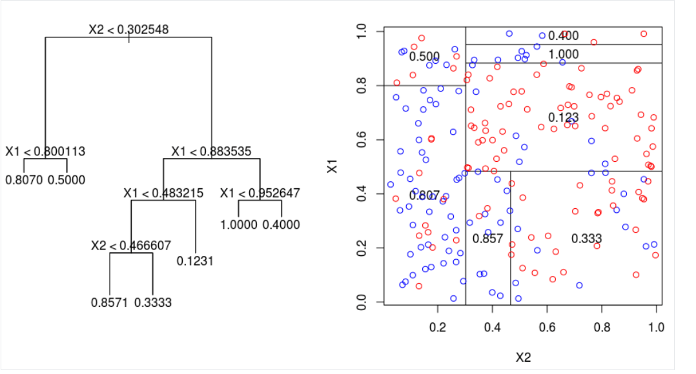
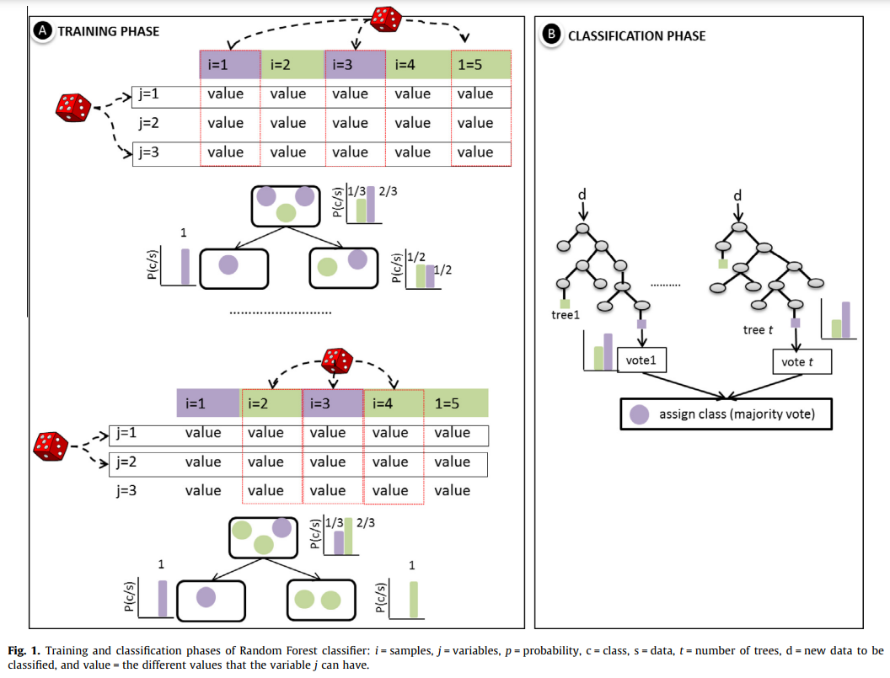
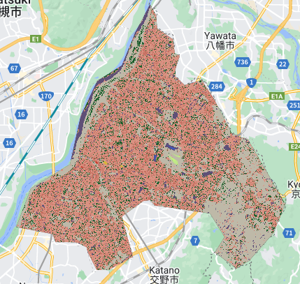
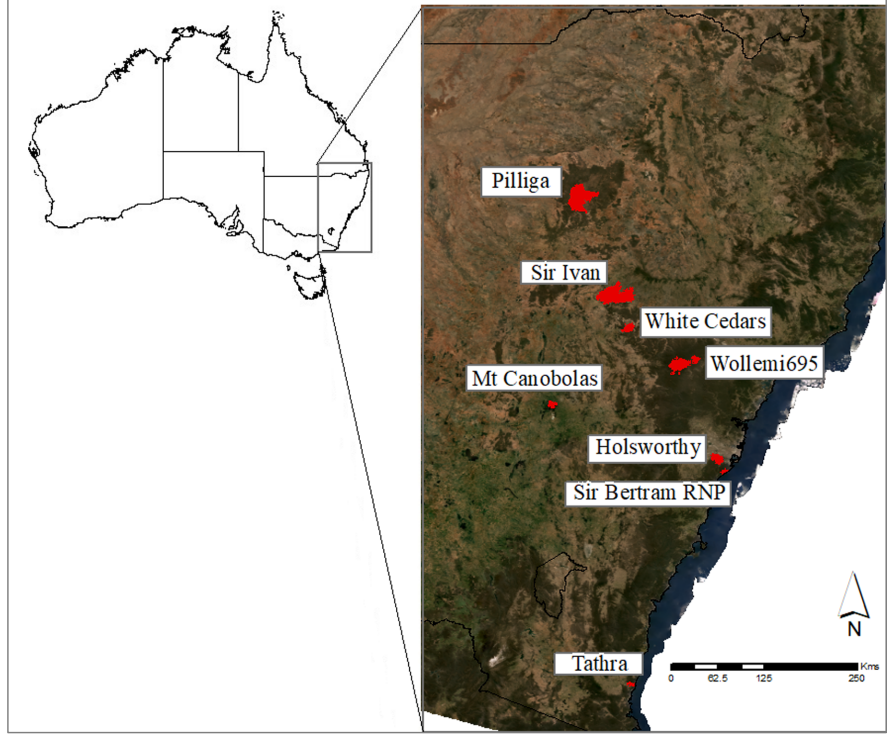
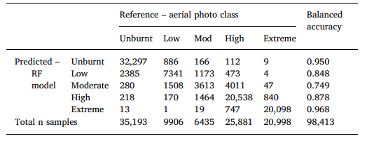

2 Week 6
2.1 Summary
This week we went through the following topics in the lecture and in the practical:
The usage of classified data in studies
- Urban expansion, air pollution and LULC, urban green spaces, monitoring forests and illegal logging, forest fires
How to conduct classification of remotely sensed data
Classification and Regression Tree (CART) classifier and issues regarding overfitting
Random Forest classifier
Unsupervised methods
- DBSCAN, ISODATA
Supervised methods
- Maximum likelihood, Support Vector Machine (SVM)
Considerations to be given
For the summary I will provide a description of the Random Forest classifier and the CART classifier which Random Forest is built on, which is one of machine learning methods we went through which are commonly used for classification and considered in the practical. In order to understand the RF Classifier, it is crucial to understand how the CART Classifier works.
CART
Type of Decision tree which may be used for classification which involves classifying into discrete categories or for regression which involves the prediction of continuous variables
May calculate the Gini Impurity for the quantification of the impurity considering the weights (mixture of categories)
Regression tree
Calculation of sum of squares regression (SSR) for different thresholds – begin with the one with lowest SSR, repeat the process
A good model – balancing bias (high = oversimplification of the model) and variance (high = not generalisable on unseen data) – trade-off relationship
How to avoid overfitting
Putting a limit on how trees can go – e.g. setting a threshold for minimum number of observations in each slit to prevent overfitting
Weakest link pruning (Mangale 2020)
Starts with original full size tree – calculate the SSR at each leaf and add all together four the total SSR for the whole tree
Calculate the total SSR for each sub tree (remove a leaf one by one) – should get larger with fewer leaves
Calculation of tree score = SSR + alpha * T
alpha – tuning parameter
start with alpha = 0 – full tree will have lowest tree score
Increase until removing a leaf will give a lower tree score and repeat until there is only one leaf left
Go back to the full dataset and conduct train-test split
Use each of the alpha values for the training data for making a new tree and sub-trees that minimises the tree score
Calculate the SSR for new each tree with the testing data – which tree has the smallest??
Conduct train and test split again – 10 times cross validation
Choose alpha value which gives the lowest SSR with testing data
T – tree complexity obesity (number of leaves in tree or subtree)

Random Forest Classification (Breiman 2001; Belgiu and Drăguţ 2016)
Involves many classification decision trees for making a prediction
created by selecting a subset of training samples through replacement (bagging approach); the same sample may be selected multiple times
Approximately two-thirds of samples used for training (in-bag samples), the remaining one-third used for testing (out-of-the bag samples)
Error estimate: out-of-bag (OOB) error – number of correct predicted/total
Need to set two parameters – the number of decision trees & the number of variables for septic on and testing for the best split when growing the trees
Important to analyse the sensitivity to the sampling design
Usage of filter methods for feature selection based on importance

Comparison of Random Forest to other machine learning methods (Belgiu and Drăguţ 2016; Chutia et al. 2016)
Strengths
Implementation is simple requiring only the adjustment of the two parameters stated above
No need to conduct cross validation or acquire a separate test set to retrieve an unbiased estimate of test set error
Reduces overfitting
Limitations
- The performance may be highly influenced by the correlation between any given trees and the strength of each tree in the forest
Suitable for highly dimensional input data such as hyperspectral imagery or multi source data compared to SVM
Worse performance for object based image analysis compared to SVM
2.1.1 Practical Output
Random Forest Classification of Hirakata, Osaka, Japan
 - Out of Bag Error Estimate: 0.45% - Training overall accuracy: 99.95% - Validation overall accuracy: 99.54%
2.2 Application
The case study I will like to consider here as an example of research using random forest classifier of remotely sensed data is the study by Gibson et al. (2020). The article is about fire severity which measure the loss of organic matter due to the fire (Keeley 2009, 118). It is important to understand the spatial patterns of fire severity for fire management and ecological and climate change research related to fires. The objectives of the paper are stated as 1) the assessment of how useful high resolution Sentinel imagery is for mapping fire severity, 2) the evaluation of the classification for fire severity based on traditional spectral indices and fractional cover products, and 3) the identification of landscape factors that are related to misclassification (ibid.)

The region of interest is New South Wales, and the focus is on eight wildfires (between 2017 and 2018, ranging from one day to two weeks) within the area. These sites were selected because there were high spatial resolution (less than 50cm) digital aerial photography with four bands (blue, green, red and NIR) for the post-fire period of them that overlapped with Sentinel 2 satellite imagery. These images went through aerial photograph interpretation for the generation of homogenous sample area polygons and classified based on five severity classes which have been used for the evaluation of the different degrees of post-fire change. Random sampling points are based on these polygons, being randomly distributed and reflecting the real-world situation. For the remotely sensed data, Sentinel 2 satellite imagery with cloud cover less than 5% and with dates near to the period when each of the fires occurred were chosen. Based on the calculation of the proportion of photosynthetic vegetation, non-photosynthetic vegetation, and bare ground cover using a fractional cover model (originally developed for Landsat imagery so need to apply surface reflectance adjustment beforehand) for each pixel, fractional cover products for each image are yielded. In addition, five candidate fire severity indices are calculated for each pre-and post- image pair (The formulas for acquiring these indices may referred to in the paper):
differenced normalised burn ratio (dNBR)
relativised dNBR (RdNBR)
relativised change in total fractional cover (RdFCT)
change in bare fractional cover (dFCB)
the differenced normalised differenced vegetation index (dNDVI)
the differenced Bare Soil Index (dBSI).
For the Random Forest Classifier, a 70%-30% split was used for the training and testing split.
Number of trees: 500
Number of predictor variables: the square root of the number of variables used in the model
A systematic comparison of models with each of the candidate severity index and their combinations was involved. Training data for unburnt areas were only considered from 2-4 km of the areas affected by the fire. The accuracy of the classification is considered through the balanced accuracy, which is the average of sensitivity and specificity and the Kappa statistic.
Interesting findings include
High accuracy (mean balanced accuracy of 88%)
Higher classification accuracy for unburnt and higher severity classes, low classification accuracy for lower severity classes (low and moderate)
The difference in scale between training and resolution of the satellite imagery maybe reflected
Moderate class – lowest representation of points, can increase the volume of training data and use a secondary classification approach
Importance of interpreting the results with knowledge of local context

In the lecture, we were encouraged not to just present a study that classifies the imagery, but also think about how the data may be used. In this case, this classification may be useful for restoring the forests; at the national scale the Australian government has announced the initial investment of $50 million for long-term protection and restoration following the Australian bushfires between 2019 and 2020 (Australia High Commission United Kingdom, n.d.), and this classification may inform which areas require the most immediate intervention.
2.3 Reflection
In CASA0006, we also learnt about different machine learning methods, being introduced to the same algorithms. However, the application of these methods in Remote Sensing completely new, and it was interesting to see how it overlapped with what we have learnt in CASA0006 and also what is perhaps more specific to remote sensing (I don’t think we covered weakest link pruning in CASA0006). I have decided to specifically focus on CART and Random Forest Classification for this learning diary, but if time permitted, I would have liked to explore the other methods in more detail as well, in terms of its content, application, and how it can be conducted in Google Earth Engine. I wonder how the results of the paper I introduced in the application section may differ if they tried using a different classification method. I